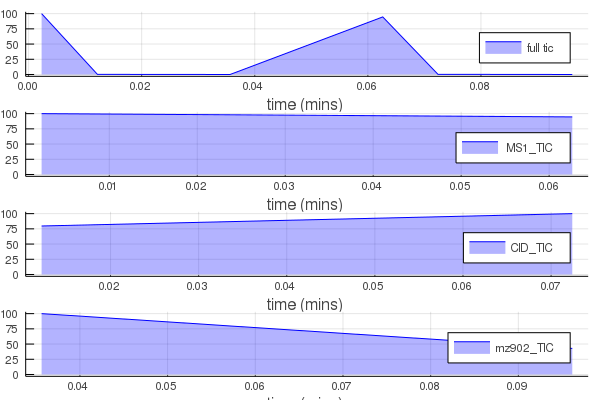
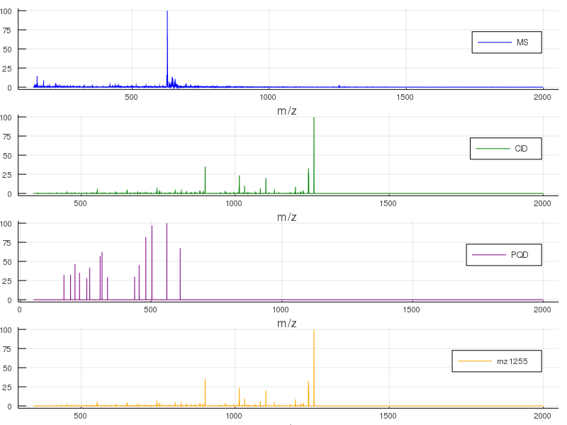

Tutorial
The msJ package intends to provide an access to the common open source mass spectrometry file format.
Loading mass spectrometry data
For this example, the mzXML file from the test folder of the package will be used. First, the info function may be used to see what's inside the file.
using msJ
info("../../test/test.mzXML")4-element Array{String,1}:
"6 scans"
"MS1+"
"MS2+ 1255.5 CID(CE=18)"
"MS3+ 902.33 PQD(CE=35)"From the output, we learn that the file contains MS scans in the positive ion mode, MS/MS scans also in positive mode, where the precursor m/z 1255.5 is activated under CID conditions with 18 collision energy and the m/Z 902.33 precursor is activated using the PQD method with the activation energy set to 35.
Then, the data can be loaded into a variable that we call scans.
scans = load("../../test/test.mzXML")6-element Array{msJ.MSscan,1}:
msJ.MSscan(1, 0.1384, 5.08195e6, [140.083, 140.167, 140.25, 140.333, 140.417, 140.5, 140.583, 140.667, 140.75, 140.833 … 1999.25, 1999.33, 1999.42, 1999.5, 1999.58, 1999.67, 1999.75, 1999.83, 1999.92, 2000.0], [236.317, 83.1408, 9.52081, 0.0, 0.0, 0.0, 0.0, 30.4295, 83.8695, 321.028 … 0.000809904, 6.63715e-5, 0.0, 0.0, 0.0, 1.94537e-7, 1.13457e-7, 1.90031e-8, 0.0, 0.0], 1, 628.333, 102558.0, 0.0, "+", "", 0.0)
msJ.MSscan(2, 0.7307, 9727.2, [345.083, 345.167, 345.25, 345.333, 345.417, 345.5, 345.583, 345.667, 345.75, 345.833 … 1999.25, 1999.33, 1999.42, 1999.5, 1999.58, 1999.67, 1999.75, 1999.83, 1999.92, 2000.0], [0.0, 0.0, 0.0, 0.0, 0.0, 0.0, 0.0, 0.0, 0.0, 0.0 … 0.0, 0.0, 0.0, 0.0, 0.0, 0.0, 0.0, 0.0, 0.0, 0.0], 2, 1255.42, 500.768, 1255.5, "+", "CID", 18.0)
msJ.MSscan(3, 2.1379, 11.3032, [50.0833, 50.1667, 50.25, 50.3333, 50.4167, 50.5, 50.5833, 50.6667, 50.75, 50.8333 … 1999.25, 1999.33, 1999.42, 1999.5, 1999.58, 1999.67, 1999.75, 1999.83, 1999.92, 2000.0], [0.0, 0.0, 0.0, 0.0, 0.0, 0.0, 0.0, 0.0, 0.0, 0.0 … 0.0, 0.0, 0.0, 0.0, 0.0, 0.0, 0.0, 0.0, 0.0, 0.0], 3, 560.0, 1.03864, 902.33, "+", "PQD", 35.0)
msJ.MSscan(4, 3.7578, 4.8084e6, [140.083, 140.167, 140.25, 140.333, 140.417, 140.5, 140.583, 140.667, 140.75, 140.833 … 1999.25, 1999.33, 1999.42, 1999.5, 1999.58, 1999.67, 1999.75, 1999.83, 1999.92, 2000.0], [90.3754, 27.1395, 2.57984, 0.0, 0.0, 0.0, 0.0, 68.2838, 222.958, 396.038 … 0.0, 0.0, 0.0, 0.0, 0.0, 0.0, 0.0, 0.0, 0.0, 0.0], 1, 628.333, 92458.8, 0.0, "+", "", 0.0)
msJ.MSscan(5, 4.3442, 12203.5, [345.083, 345.167, 345.25, 345.333, 345.417, 345.5, 345.583, 345.667, 345.75, 345.833 … 1999.25, 1999.33, 1999.42, 1999.5, 1999.58, 1999.67, 1999.75, 1999.83, 1999.92, 2000.0], [0.0, 0.0, 0.0, 0.0, 0.0, 0.0, 0.0, 0.0, 0.0, 0.0 … 0.0, 0.0, 0.0, 0.0, 0.0, 0.0, 0.0, 0.0, 0.0, 0.0], 2, 1255.5, 454.605, 1255.5, "+", "CID", 18.0)
msJ.MSscan(6, 5.7689, 4.84455, [50.0833, 50.1667, 50.25, 50.3333, 50.4167, 50.5, 50.5833, 50.6667, 50.75, 50.8333 … 1999.25, 1999.33, 1999.42, 1999.5, 1999.58, 1999.67, 1999.75, 1999.83, 1999.92, 2000.0], [0.0, 0.0, 0.0, 0.0, 0.0, 0.0, 0.0, 0.0, 0.0, 0.0 … 0.0, 0.0, 0.0, 0.0, 0.0, 0.0, 0.0, 0.0, 0.0, 0.0], 3, 611.167, 0.699387, 902.33, "+", "PQD", 35.0) As expected, the scans variable contains an array of 6 MSscans. The fields of the individual scans may be accessed by:
println("scan num : ", scans[1].num)scan num : 1println("Polarity : ", scans[1].polarity)Polarity : +println("retention time: ", scans[1].rt)retention time: 0.1384println("MS level : ", scans[1].level)MS level : 1println("Base peak m/z : ", scans[1].basePeakMz)Base peak m/z : 628.333println("Base peak int.: ", scans[1].basePeakIntensity)Base peak int.: 102558.0The mass spectrum is stored in two arrays:
mz_2 = scans[2].mz
int_2 = scans[2].int ; nothingGetting chromatograms is straightforward using the chromatogram method:
full_TIC = chromatogram(scans)msJ.Chromatogram([0.1384, 0.7307, 2.1379, 3.7578, 4.3442, 5.7689], [5.08195e6, 9727.2, 11.3032, 4.8084e6, 12203.5, 4.84455], 5.08195e6)MS1_TIC = chromatogram(scans, msJ.Level(1))msJ.Chromatogram([0.1384, 3.7578], [5.08195e6, 4.8084e6], 5.08195e6)CID_TIC = chromatogram(scans, msJ.Activation_Method("CID"))msJ.Chromatogram([0.7307, 4.3442], [9727.2, 12203.5], 12203.5)mz902_TIC = chromatogram(scans, msJ.Precursor(902.33))msJ.Chromatogram([2.1379, 5.7689], [11.3032, 4.84455], 11.3032)The individual extracted chromatogram may be plotted. First we need to import the Julia package for plotting. Then, we can make a figure with the chromatograms:
using Plots ;
p1 = plot(full_TIC, label = "full tic")
p2 = plot(MS1_TIC, label = " MS1_TIC")
p3 = plot(CID_TIC, label = "CID_TIC")
p4 = plot(mz902_TIC, label = "mz902_TIC")
plot(p1, p2, p3, p4, layout = (4,1))/home/travis/.julia/packages/GR/ZI5OE/src/../deps/gr/bin/gksqt: error while loading shared libraries: libQt5Widgets.so.5: cannot open shared object file: No such file or directory
connect: Connection refused
GKS: can't connect to GKS socket application
Did you start 'gksqt'?
GKS: Open failed in routine OPEN_WS
GKS: GKS not in proper state. GKS must be either in the state WSOP or WSAC in routine ACTIVATE_WS
Average mass spectra may be obtained using the proper msfilter functions:
ms1 = msfilter(scans, msJ.Level(1))
ms2_CID = msfilter(scans, msJ.Activation_Method("CID"))
ms2_PQD = msfilter(scans, msJ.Activation_Method("PQD"))
ms2_1255 = msfilter(scans, msJ.Precursor(1255.5))msJ.MSscans([2, 5], [0.7307, 4.3442], 21930.7, [345.083, 345.167, 345.25, 345.333, 345.417, 345.5, 345.583, 345.667, 345.75, 345.833 … 1999.25, 1999.33, 1999.42, 1999.5, 1999.58, 1999.67, 1999.75, 1999.83, 1999.92, 2000.0], [0.0, 0.0, 0.0, 0.0, 0.0, 0.0, 0.0, 0.0, 0.0, 0.0 … 0.0, 0.0, 0.0, 0.0, 0.0, 0.0, 0.0, 0.0, 0.0, 0.0], [2, 2], 1255.5, 473.00372314453125, [1255.5, 1255.5], ["+", "+"], ["CID", "CID"], [18.0, 18.0], [0.0, 0.0, 0.0, 0.0, 0.0, 0.0, 0.0, 0.0, 0.0, 0.0 … 0.0, 0.0, 0.0, 0.0, 0.0, 0.0, 0.0, 0.0, 0.0, 0.0])and then plotted similarly:
p5 = plot(ms1, label = "MS", color = :blue)
p6 = plot(ms2_CID, label = "CID", color = :green)
p7 = plot(ms2_PQD, label = "PQD", color = :purple)
p8 = plot(ms2_1255, label = "mz 1255", color = :orange)
plot(p5, p6, p7, p8, layout = (4,1), size = (800,600))/home/travis/.julia/packages/GR/ZI5OE/src/../deps/gr/bin/gksqt: error while loading shared libraries: libQt5Widgets.so.5: cannot open shared object file: No such file or directory
connect: Connection refused
GKS: can't connect to GKS socket application
Did you start 'gksqt'?
GKS: Open failed in routine OPEN_WS
GKS: GKS not in proper state. GKS must be either in the state WSOP or WSAC in routine ACTIVATE_WS
The average mass spectrum for CID (green) and for the m/z 1255.5 precursor ion (orange) are identical, which is not surprising.